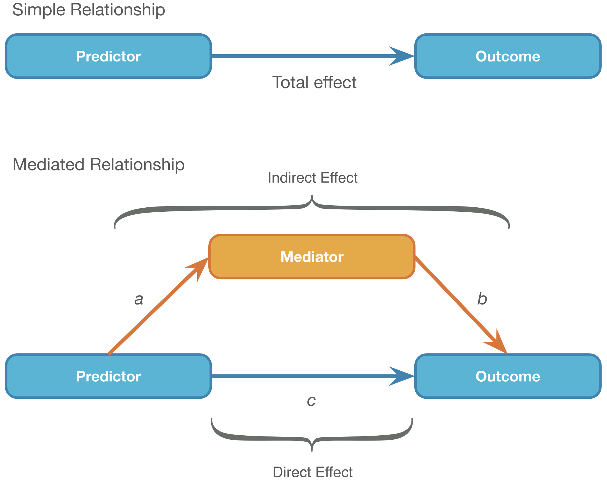
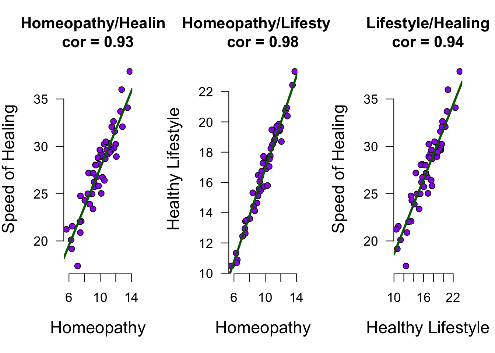
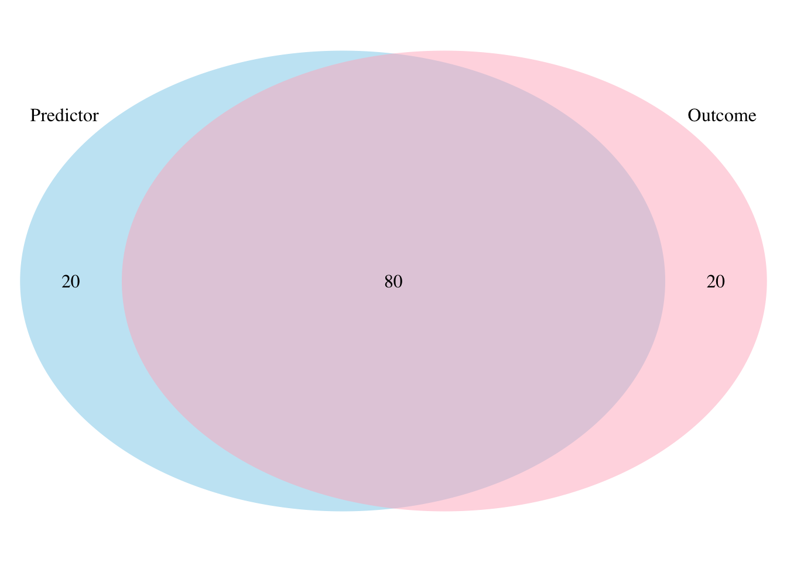
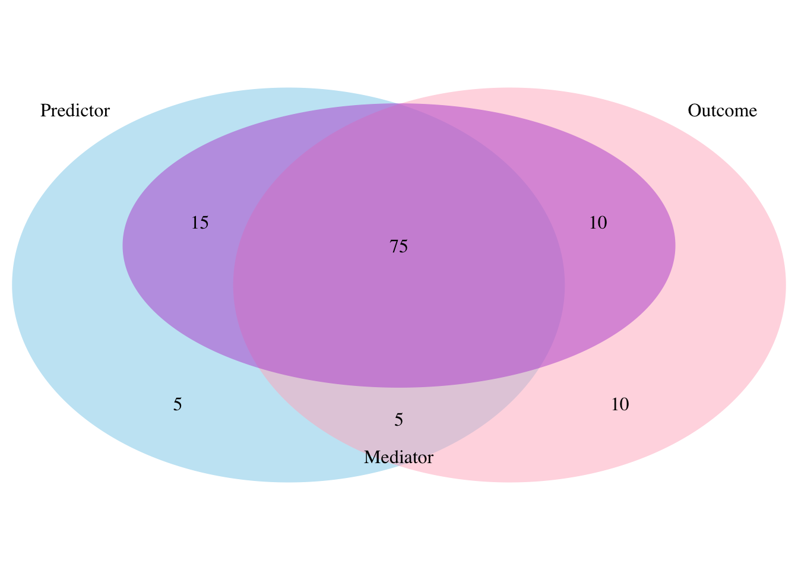

set.seed(1976)
## Set parameters for simulation
n <- 50
mu <- 10
sigma <- 2
## Predictor
use.homeopathic.remedies <- rnorm(n, mu, sigma)27. Mediation
In this lecture we aim to:
- Explore mediation analysis
- Link it to regression
- Demonstrate in JASP
Reading: Chapter 10
Mediation
Mediation

In statistics, a mediation model is one that seeks to identify and explain the mechanism or process that underlies an observed relationship between an independent variable and a dependent variable via the inclusion of a third hypothetical variable, known as a mediator variable (also a mediating variable, intermediary variable, or intervening variable).
Source: WIKIPEDIA
Example
Does the speed of recovery after sickness improve with the use of alternative medicine or is this effect mediated by a healthy lifestyle?
Total effect
- Total effect:
- \(\widehat{\text{Outcome}} = b_0 + b_t \text{Predictor}_i\)
Mediation paths
You found my sneaky text to create space! You are awesome. Muahahahahahahahahahahahahahahahahahahahahahahahaha haha…hah.. uhhhh
- Total effect:
- \(\widehat{\text{Outcome}} = b_0 + b_t \text{Predictor}_i\)
- Mediator effect (a):
- \(\widehat{\text{Mediator}} = b_0 + b_a \text{Predictor}_i\)
- Combined effect (b + c):
- \(\widehat{\text{Outcome}} = b_0 + b_{c} \text{Predictor}_i + b_b \text{Mediator}_i\)
Simulate data
Create predictor variable
Mediator
Create mediator
b0 <- 2 # intercept of lifestyle
b1 <- 1.5 # association homeopathy and lifestyle, b.a
error <- rnorm(n,0,.7)
healthy.lifestyle <- b0 + b1 * use.homeopathic.remedies + errorSpecify model
Create outcome variable
b0 <- 6 # intercept of healing
b1 <- 0.5 # association homeopathy and healing, b.c
b2 <- 1 # association lifestyle and healing, b.b
error <- rnorm(n, 0, 1.4)
speed.of.healing <- b0 +
b1 * use.homeopathic.remedies +
b2 * healthy.lifestyle +
error
data <- data.frame(use.homeopathic.remedies,
healthy.lifestyle,
speed.of.healing)
data <- round(data, 4)The data
Fit 3 models
model.outcome.predictor <- lm(speed.of.healing ~ use.homeopathic.remedies)
model.mediator.predictor <- lm(healthy.lifestyle ~ use.homeopathic.remedies)
model.combined <- lm(speed.of.healing ~ use.homeopathic.remedies + healthy.lifestyle)- Total effect:
- \(\widehat{\text{Outcome}} = b_0 + b_t \text{Predictor}_i\)
- Mediator effect:
- \(\widehat{\text{Mediator}} = b_0 + b_a \text{Predictor}_i\)
- Combined effect:
- \(\widehat{\text{Outcome}} = b_0 + b_{c} \text{Predictor}_i + b_b \text{Mediator}_i\)
Extract beta coëfficients
b.outcome.predictor <- model.outcome.predictor$coefficients[2] # b.t
b.mediator.predictor <- model.mediator.predictor$coefficients[2] # b.a
b.combined.mediator <- model.combined$coefficients[3] # b.b
b.combined.predictor <- model.combined$coefficients[2] # b.c- Total effect:
- \(\widehat{\text{Outcome}} = b_0 + b_t \text{Predictor}_i\)
- Mediator effect:
- \(\widehat{\text{Mediator}} = b_0 + b_a \text{Predictor}_i\)
- Combined effect:
- \(\widehat{\text{Outcome}} = b_0 + b_{c} \text{Predictor}_i + b_b \text{Mediator}_i\)
View beta coëfficients
b.mediator.predictor # b.a[1] 1.530447b.combined.mediator # b.b[1] 0.9725824View beta coëfficients
b.outcome.predictor # b.t [1] 2.035573b.mediator.predictor # b.a [1] 1.530447b.combined.mediator # b.b[1] 0.9725824b.combined.predictor # b.c[1] 0.5470875Visual

Calculate indirect effect
\(a \times b = b_a \times b_b\)
indirect <- b.mediator.predictor * b.combined.mediator; indirect # a * b[1] 1.488485indirect + b.combined.predictor # a * b + c [1] 2.035573b.outcome.predictor # total effect[1] 2.035573Calculate indirect effect (standardized)
\(\frac{ab}{s_{Outcome}} \times s_{Predictor} = \frac{b_a b_b}{s_{Outcome}} \times s_{Predictor}\)
b.mediator.predictor*b.combined.mediator /
sd(speed.of.healing)*sd(use.homeopathic.remedies)[1] 0.67769Calculate \(P_M\)
\(\frac{ab}{total} = \frac{b_a b_b}{b_t} = \frac{b_a b_b}{b_a b_b + b_c}\)
(b.mediator.predictor*b.combined.mediator) /
b.outcome.predictor[1] 0.7312366The proportion of the total effect that can be attributed to the mediator
Does not take into account size of total effect
“although it is tempting to think of \(P_M\) as a proportion (because it is the ratio of the indirect effect to the total effect) it is not: it can exceed 1 and even take negative values (Preacher & Kelley, 2011).”
Venn diagrams - effect

Venn diagrams - mediator

Caution with PROCESS
When we test such hypotheses with the help of path models applied to observational data, we are in the business of causal inference on the basis of observational data
More examples
- Basic mediation - Presumed Media Influence
- Crazier example - Age and Fatigue
- For the exam, max 1 mediator (but see Section 10.4.7)
Closing
Recap
- Mediation analysis is a way to model dependence between predictors
- PROCESS module is very flexible
- Causal assumptions extremely important with PROCESS models
Recommended Exercises
Contact